Dot = stand spot, ring = target, line = throw direction. Hover a dot for aim numbers. Columns: crosshair yaw/pitch deg, flight time, landing error, aim forgiveness.
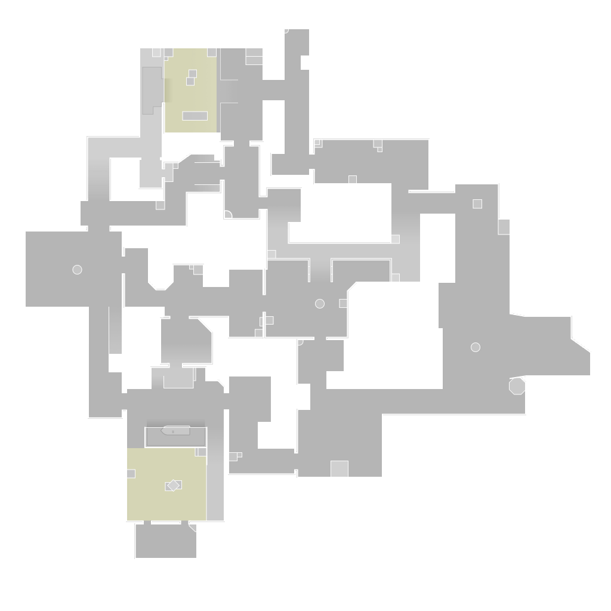
| # | stand | yaw | pitch | time | err | forgive | crosshair on |
|---|---|---|---|---|---|---|---|
| 1 | (6981, -6713, 910) | -153.0 | -38.4 | 0.39s | 149u | 50% | (6324, -7047, 500) at 941u |
| 2 | (5183, -7724, 510) | 29.8 | -12.9 | 0.44s | 117u | 100% | (5883, -7324, 500) at 827u |
| 3 | (6931, -6541, 530) | -142.6 | -16.9 | 0.47s | 143u | 12% | (6396, -6950, 500) at 705u |
| 4 | (5257, -6436, 430) | -42.2 | -8.9 | 0.54s | 137u | 62% | (5441, -6603, 566) at 252u |
| 5 | (6981, -7713, 710) | 151.8 | -27.9 | 0.56s | 141u | 50% | (6339, -7369, 500) at 823u |
| 6 | (7032, -7712, 710) | 153.2 | -26.9 | 0.56s | 140u | 50% | (6355, -7370, 500) at 850u |
| 7 | (5369, -6244, 413) | -51.6 | -6.6 | 0.57s | 144u | 38% | (5844, -6843, 500) at 769u |
| 8 | (5623, -6266, 410) | -65.0 | -12.6 | 0.61s | 68u | 88% | (5733, -6500, 527) at 265u |
| 9 | (6596, -6293, 410) | -120.7 | -12.8 | 0.61s | 60u | 62% | (6466, -6514, 527) at 263u |
| 10 | (7018, -6683, 910) | -152.6 | -37.1 | 0.62s | 138u | 50% | (6332, -7038, 500) at 969u |
| 11 | (5965, -6024, 410) | -85.5 | -10.6 | 0.64s | 67u | 100% | (6001, -6471, 501) at 456u |
| 12 | (6042, -5999, 410) | -89.2 | -10.4 | 0.64s | 75u | 62% | (6048, -6468, 499) at 477u |
| # | stand | yaw | pitch | time | err | forgive | crosshair on |
|---|---|---|---|---|---|---|---|
| 1 | (-2277, -8364, -90) | 148.1 | -16.9 | 0.64s | 131u | 50% | (-2802, -8037, -102) at 646u |
| 2 | (-4192, -7295, -96) | -25.8 | -16.4 | 0.76s | 131u | 50% | (-3651, -7557, -98) at 627u |
| 3 | (-4202, -7222, -90) | -29.8 | -16.2 | 0.78s | 126u | 62% | (-3656, -7535, -99) at 657u |
| 4 | (-4315, -7164, -90) | -29.8 | -14.9 | 0.78s | 67u | 88% | (-3712, -7509, -100) at 718u |
| 5 | (-4482, -7108, -83) | -28.7 | -12.6 | 0.81s | 69u | 62% | (-3984, -7380, -35) at 581u |
| 6 | (-4793, -7101, -70) | -22.4 | -10.8 | 0.89s | 19u | 75% | (-3793, -7512, -100) at 1101u |
| 7 | (-4807, -7132, -70) | -22.3 | -10.7 | 0.89s | 36u | 75% | (-3810, -7540, -99) at 1097u |
| 8 | (-4798, -8436, -70) | 23.9 | -11.8 | 0.98s | 60u | 100% | (-3999, -8083, -77) at 892u |
| 9 | (-90, -1207, 250) | -114.0 | 51.2 | 5.78s | 144u | 0% | open sky |
| 10 | (2045, -2958, 210) | -138.2 | 53.4 | 5.79s | 132u | 25% | open sky |
| 11 | (-751, -1170, 210) | -111.0 | 52.8 | 5.79s | 142u | 25% | (-999, -1819, 1301) at 1149u |
| 12 | (-965, -977, 210) | -108.8 | 52.9 | 5.80s | 118u | 25% | open sky |
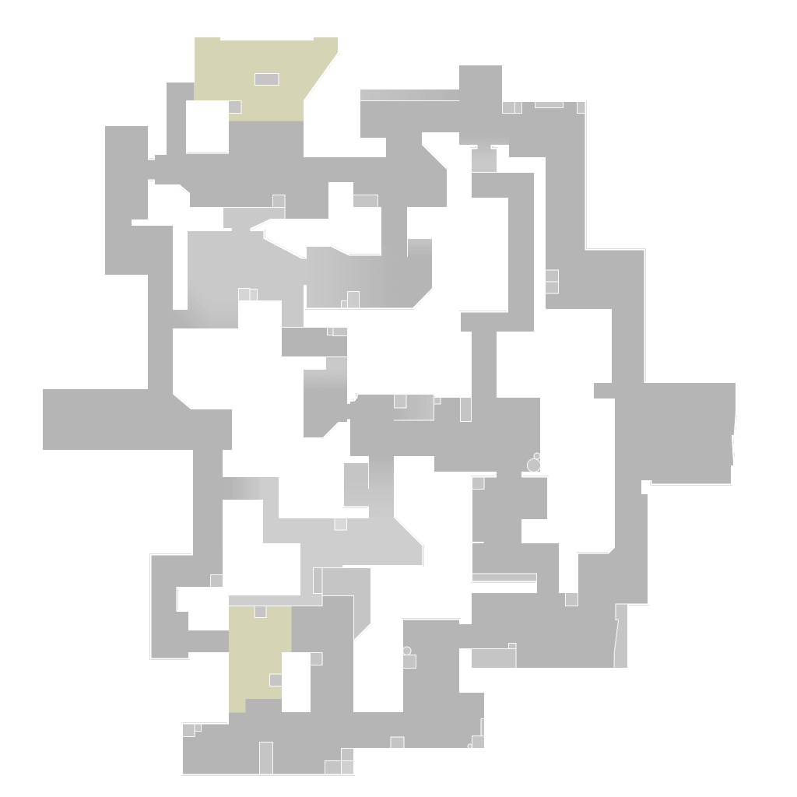
| # | stand | yaw | pitch | time | err | forgive | crosshair on |
|---|---|---|---|---|---|---|---|
| 1 | (6611, -7025, 60) | 26.8 | -15.9 | 0.40s | 107u | 38% | (7347, -6653, 0) at 858u |
| 2 | (6500, -6500, 60) | 0.2 | -17.1 | 0.43s | 96u | 62% | (7264, -6498, 0) at 799u |
| 3 | (6549, -5966, 70) | -24.6 | -16.6 | 0.44s | 114u | 25% | (7295, -6308, 0) at 856u |
| 4 | (6487, -7044, 110) | 25.0 | -16.6 | 0.44s | 106u | 38% | (7355, -6638, 0) at 1000u |
| 5 | (8252, -7322, 10) | 124.8 | -16.5 | 0.45s | 135u | 88% | (7894, -6807, 0) at 653u |
| 6 | (8235, -5673, 10) | -124.0 | -16.6 | 0.45s | 136u | 88% | (7887, -6188, 0) at 648u |
| 7 | (6384, -7053, 110) | 22.6 | -15.3 | 0.47s | 116u | 25% | (7343, -6654, 0) at 1078u |
| 8 | (8179, -5573, 10) | -118.5 | -15.9 | 0.47s | 143u | 62% | (7869, -6146, 0) at 677u |
| 9 | (8020, -7543, 10) | 107.2 | -15.3 | 0.51s | 146u | 50% | (7821, -6896, 0) at 702u |
| 10 | (8233, -7544, 10) | 117.8 | -14.3 | 0.52s | 144u | 62% | (7893, -6900, 0) at 751u |
| 11 | (8234, -5444, 10) | -117.7 | -14.2 | 0.53s | 144u | 62% | (7894, -6091, 0) at 755u |
| 12 | (6319, -5905, 110) | -22.9 | -15.5 | 0.53s | 120u | 38% | (7267, -6305, 0) at 1067u |
| # | stand | yaw | pitch | time | err | forgive | crosshair on |
|---|---|---|---|---|---|---|---|
| 1 | (-1475, -5580, 310) | -93.5 | -12.8 | 0.61s | 48u | 62% | (-1504, -6041, 380) at 473u |
| 2 | (-1033, -5631, 310) | -115.3 | -12.2 | 0.61s | 97u | 62% | (-1237, -6063, 382) at 489u |
| 3 | (-1036, -5583, 310) | -114.1 | -11.9 | 0.62s | 116u | 62% | (-1239, -6037, 380) at 508u |
| 4 | (-2685, -6313, 310) | -15.5 | -11.6 | 0.62s | 133u | 25% | (-2290, -6423, 401) at 419u |
| 5 | (-2663, -7046, 310) | 22.2 | -11.4 | 0.62s | 141u | 62% | (-2274, -6887, 400) at 429u |
| 6 | (-2728, -6403, 313) | -9.9 | -11.5 | 0.63s | 130u | 25% | (-2304, -6477, 400) at 439u |
| 7 | (-2504, -6334, 320) | -18.0 | -13.6 | 0.64s | 36u | 62% | (-2130, -6455, 400) at 405u |
| 8 | (-1310, -5416, 310) | -99.9 | -10.4 | 0.64s | 68u | 62% | (-1416, -6025, 372) at 629u |
| 9 | (-2808, -6202, 310) | -19.8 | -9.5 | 0.66s | 117u | 12% | (-2304, -6384, 395) at 543u |
| 10 | (-2810, -7037, 310) | 16.6 | -9.5 | 0.66s | 120u | 62% | (-2323, -6892, 400) at 515u |
| 11 | (-2918, -6640, 310) | -0.8 | -9.2 | 0.67s | 133u | 25% | (-2331, -6648, 390) at 595u |
| 12 | (-2925, -6591, 310) | -2.8 | -9.2 | 0.68s | 130u | 25% | (-2335, -6620, 389) at 598u |
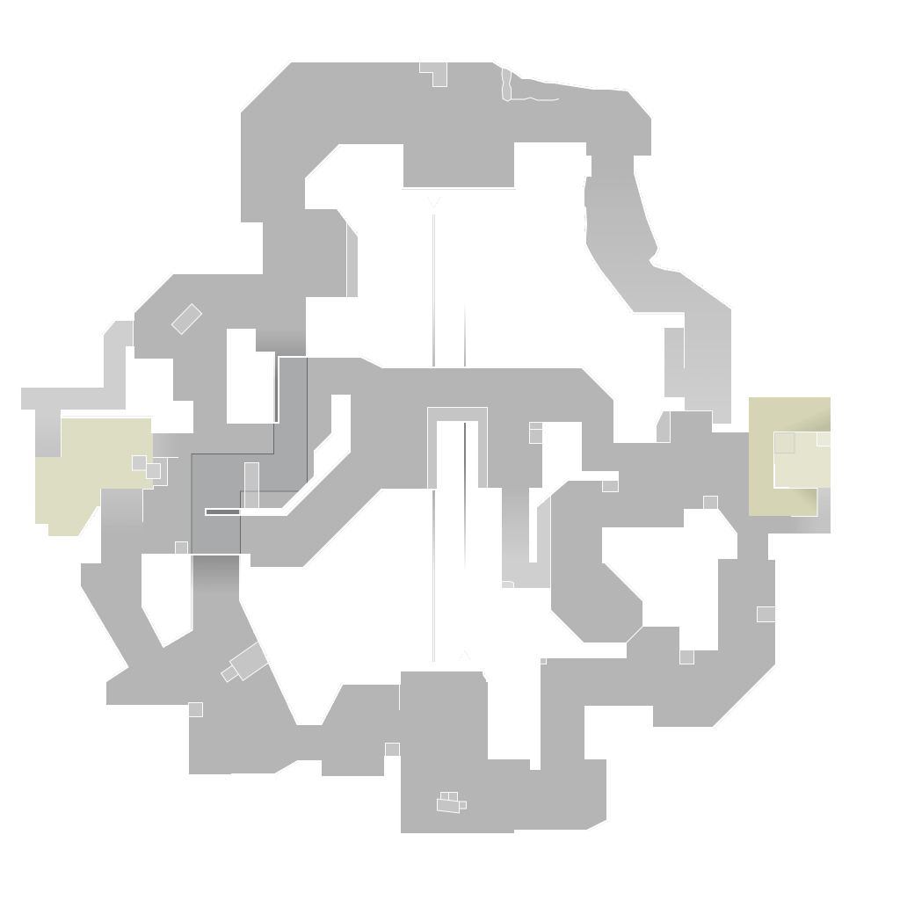
| # | stand | yaw | pitch | time | err | forgive | crosshair on |
|---|---|---|---|---|---|---|---|
| 1 | (8406, -6336, 800) | 139.8 | -17.5 | 0.34s | 77u | 100% | (7860, -5874, 750) at 750u |
| 2 | (8397, -6337, 800) | 141.4 | -16.6 | 0.36s | 31u | 100% | (7806, -5865, 750) at 789u |
| 3 | (8406, -5067, 760) | -140.9 | -13.3 | 0.36s | 24u | 38% | (7855, -5515, 767) at 729u |
| 4 | (8350, -4938, 750) | -133.6 | -13.2 | 0.37s | 21u | 0% | (7871, -5441, 762) at 713u |
| 5 | (8372, -5003, 760) | -136.0 | -13.1 | 0.38s | 42u | 25% | (7855, -5503, 767) at 738u |
| 6 | (8431, -4964, 752) | -137.5 | -11.8 | 0.40s | 23u | 25% | (7873, -5475, 769) at 773u |
| 7 | (8432, -6553, 820) | 134.3 | -15.1 | 0.42s | 31u | 100% | (7798, -5903, 750) at 941u |
| 8 | (8760, -6187, 760) | 156.3 | -11.6 | 0.43s | 85u | 100% | (7922, -5818, 747) at 935u |
| 9 | (8776, -5966, 760) | 168.3 | -11.1 | 0.43s | 35u | 100% | (7855, -5775, 750) at 958u |
| 10 | (8698, -6418, 928) | 145.8 | -18.1 | 0.45s | 65u | 88% | (7805, -5812, 750) at 1136u |
| 11 | (8603, -5021, 760) | -144.9 | -11.1 | 0.45s | 25u | 25% | (7871, -5535, 760) at 912u |
| 12 | (8790, -6325, 990) | 150.3 | -21.1 | 0.46s | 118u | 100% | (7856, -5792, 750) at 1153u |
| # | stand | yaw | pitch | time | err | forgive | crosshair on |
|---|---|---|---|---|---|---|---|
| 1 | (8570, 4574, 1110) | -137.7 | -25.2 | 0.35s | 70u | 100% | (7969, 4027, 904) at 897u |
| 2 | (8525, 4616, 1110) | -133.2 | -24.2 | 0.36s | 59u | 100% | (7943, 3997, 904) at 932u |
| 3 | (6858, 3712, 560) | 9.1 | 6.2 | 0.39s | 54u | 0% | (7995, 3894, 861) at 1159u |
| 4 | (7754, 2802, 560) | 83.9 | 2.9 | 0.39s | 51u | 12% | (7872, 3908, 792) at 1114u |
| 5 | (6830, 3570, 560) | 17.5 | 3.0 | 0.39s | 53u | 0% | (7904, 3908, 793) at 1127u |
| 6 | (7726, 2800, 560) | 82.5 | 2.9 | 0.40s | 51u | 12% | (7873, 3908, 792) at 1119u |
| 7 | (6806, 3397, 560) | 26.4 | 5.7 | 0.43s | 52u | 0% | (7852, 3917, 851) at 1174u |
| 8 | (8966, 3579, 560) | 164.3 | 3.6 | 0.44s | 51u | 12% | (7209, 4071, 851) at 1828u |
| 9 | (6764, 3366, 560) | 26.0 | 5.5 | 0.44s | 33u | 0% | (7850, 3895, 852) at 1214u |
| 10 | (8547, 2960, 560) | 126.4 | 3.7 | 0.44s | 41u | 25% | (7857, 3894, 809) at 1164u |
| 11 | (8999, 2692, 860) | 133.3 | -5.4 | 0.58s | 35u | 0% | (7887, 3872, 882) at 1629u |
| 12 | (8590, 2343, 690) | 113.9 | 0.8 | 0.60s | 63u | 12% | (7913, 3872, 887) at 1672u |
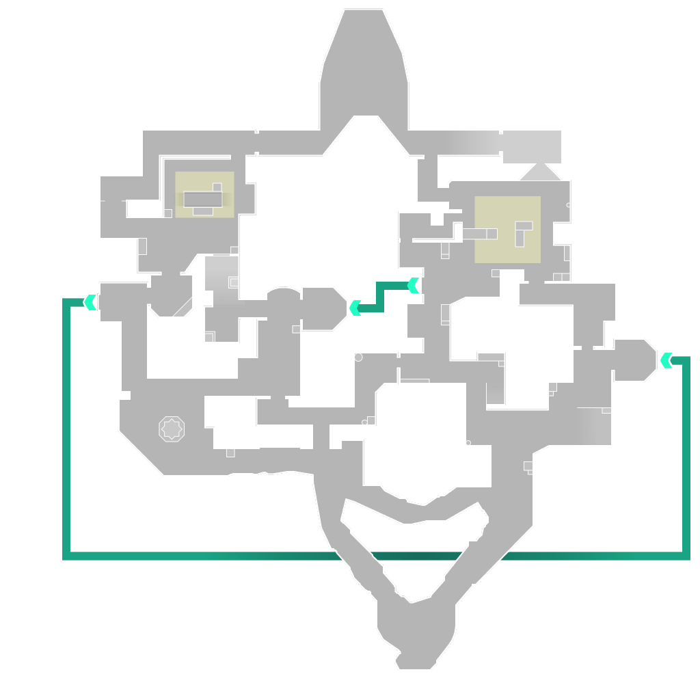
| # | stand | yaw | pitch | time | err | forgive | crosshair on |
|---|---|---|---|---|---|---|---|
| 1 | (10894, 1486, 110) | 95.6 | -11.4 | 0.60s | 119u | 50% | (10837, 2066, 167) at 594u |
| 2 | (11043, 1473, 110) | 104.6 | -10.9 | 0.62s | 150u | 50% | (10801, 2401, 100) at 977u |
| 3 | (11280, 1479, 110) | 113.4 | -10.0 | 0.68s | 132u | 62% | (10862, 2442, 100) at 1066u |
| 4 | (11101, 1249, 160) | 101.8 | -11.5 | 0.70s | 145u | 100% | (10864, 2384, 100) at 1184u |
| 5 | (11124, 1028, 210) | 100.6 | -11.0 | 0.75s | 148u | 88% | (10853, 2471, 100) at 1495u |
| 6 | (11472, 1186, 110) | 115.3 | -7.5 | 0.76s | 146u | 50% | (10871, 2457, 100) at 1418u |
| 7 | (11358, 1365, 110) | 114.4 | -8.5 | 0.77s | 126u | 62% | (10845, 2494, 100) at 1254u |
| 8 | (10629, 1483, 490) | 82.8 | -28.9 | 0.81s | 108u | 100% | (10672, 1820, 477) at 388u |
| 9 | (11649, 1060, 110) | 118.7 | -5.9 | 0.86s | 144u | 38% | (10791, 2627, 100) at 1796u |
| 10 | (10280, 952, 610) | 73.7 | -21.8 | 0.87s | 138u | 100% | (10603, 2050, 329) at 1232u |
| 11 | (9560, 2103, 110) | 15.8 | -15.2 | 0.87s | 134u | 62% | (10004, 2229, 160) at 478u |
| 12 | (9637, 3002, 110) | -24.5 | -15.6 | 0.88s | 149u | 50% | (10017, 2829, 169) at 433u |
| # | stand | yaw | pitch | time | err | forgive | crosshair on |
|---|---|---|---|---|---|---|---|
| 1 | (12428, -5714, 320) | 130.5 | -12.5 | 0.39s | 105u | 0% | (11859, -5046, 300) at 899u |
| 2 | (11283, -3673, 330) | -70.0 | -13.2 | 0.48s | 66u | 75% | (11576, -4476, 305) at 878u |
| 3 | (11033, -5865, 310) | 57.9 | -11.7 | 0.51s | 65u | 88% | (11493, -5132, 305) at 884u |
| 4 | (12490, -4113, 300) | -138.7 | -13.9 | 0.56s | 128u | 38% | (12184, -4382, 374) at 420u |
| 5 | (10962, -6019, 310) | 58.6 | -8.1 | 0.63s | 121u | 25% | (11614, -4953, 308) at 1262u |
| 6 | (10970, -5971, 310) | 58.8 | -9.5 | 0.63s | 99u | 38% | (11526, -5052, 305) at 1088u |
| 7 | (13104, -3690, 310) | -141.6 | -7.7 | 0.71s | 71u | 62% | (12028, -4542, 300) at 1385u |
| 8 | (13013, -3498, 250) | -134.3 | -4.5 | 0.77s | 134u | 50% | (11917, -4622, 303) at 1575u |
| 9 | (10669, -6233, 310) | 53.6 | -5.4 | 0.78s | 126u | 38% | (11712, -4819, 320) at 1765u |
| 10 | (12747, -3893, 310) | -138.4 | -10.9 | 0.78s | 104u | 62% | (12026, -4534, 300) at 982u |
| 11 | (12803, -3756, 310) | -135.8 | -9.7 | 0.80s | 131u | 50% | (12030, -4508, 300) at 1094u |
| 12 | (10002, 1958, 110) | -75.3 | 25.6 | 3.15s | 88u | 12% | (11096, -2213, 2346) at 4780u |
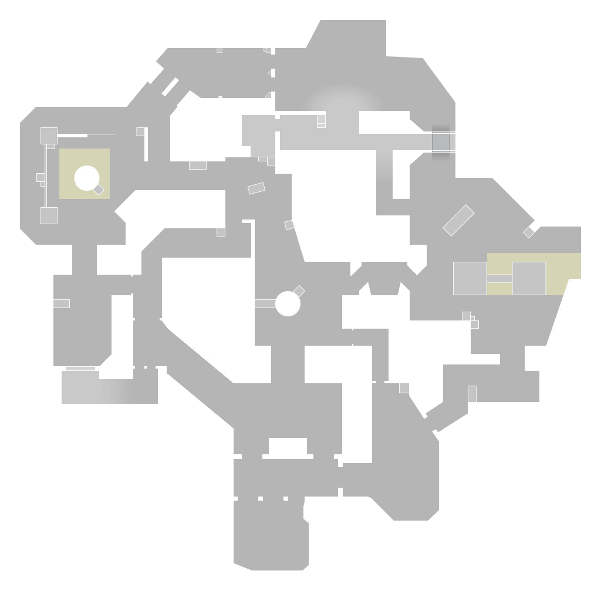
| # | stand | yaw | pitch | time | err | forgive | crosshair on |
|---|---|---|---|---|---|---|---|
| 1 | (5678, 7075, 535) | -136.7 | -16.2 | 0.43s | 107u | 62% | (5151, 6578, 500) at 754u |
| 2 | (3810, 5909, 610) | 24.3 | -16.4 | 0.43s | 126u | 88% | (4691, 6307, 500) at 1008u |
| 3 | (5338, 5464, 610) | 119.8 | -19.1 | 0.45s | 140u | 62% | (4929, 6179, 500) at 872u |
| 4 | (6199, 5994, 610) | 164.4 | -15.1 | 0.47s | 95u | 50% | (5700, 6133, 646) at 536u |
| 5 | (5868, 6438, 535) | -174.8 | -17.4 | 0.48s | 115u | 88% | (5203, 6378, 502) at 699u |
| 6 | (3767, 5467, 610) | 38.0 | -13.7 | 0.52s | 91u | 100% | (4690, 6189, 500) at 1206u |
| 7 | (5959, 7141, 560) | -143.3 | -14.3 | 0.52s | 104u | 88% | (5217, 6587, 500) at 955u |
| 8 | (5305, 5253, 610) | 113.1 | -16.2 | 0.52s | 136u | 62% | (5178, 5551, 691) at 337u |
| 9 | (3825, 6183, 610) | 10.1 | -19.0 | 0.52s | 84u | 62% | (4642, 6328, 500) at 878u |
| 10 | (6246, 6450, 590) | -176.0 | -14.1 | 0.53s | 111u | 50% | (5201, 6377, 502) at 1080u |
| 11 | (5990, 6959, 560) | -151.5 | -15.0 | 0.53s | 116u | 100% | (5221, 6540, 500) at 907u |
| 12 | (3770, 6156, 610) | 11.1 | -17.9 | 0.53s | 88u | 75% | (4636, 6326, 500) at 927u |
| # | stand | yaw | pitch | time | err | forgive | crosshair on |
|---|---|---|---|---|---|---|---|
| 1 | (8888, -4520, 545) | -164.1 | -10.9 | 0.37s | 129u | 12% | (8400, -4659, 623) at 516u |
| 2 | (8703, -5498, 1010) | 140.2 | -33.1 | 0.47s | 98u | 0% | (8020, -4930, 605) at 1060u |
| 3 | (8580, -5620, 1010) | 130.5 | -34.3 | 0.54s | 93u | 12% | (8028, -4973, 605) at 1029u |
| 4 | (8825, -5375, 1010) | 147.7 | -33.4 | 0.55s | 140u | 25% | (8085, -4907, 608) at 1048u |
| 5 | (7091, -5491, 610) | 42.3 | -14.4 | 0.55s | 144u | 0% | (7609, -5020, 606) at 722u |
| 6 | (9325, -3966, 590) | -149.5 | -7.2 | 0.60s | 141u | 25% | (8404, -4508, 630) at 1077u |
| 7 | (9336, -4040, 590) | -151.9 | -7.4 | 0.60s | 144u | 38% | (8403, -4538, 628) at 1066u |
| 8 | (6925, -5620, 1010) | 42.2 | -31.3 | 0.86s | 145u | 12% | (7629, -4982, 608) at 1112u |
| 9 | (9717, -3262, 610) | -139.3 | -3.5 | 0.86s | 128u | 12% | (7902, -4823, 641) at 2398u |
| 10 | (6803, -5498, 1010) | 33.1 | -30.9 | 0.87s | 131u | 12% | (7614, -4968, 605) at 1129u |
| 11 | (8959, -4007, 590) | -143.8 | -12.7 | 0.88s | 139u | 0% | (8385, -4428, 605) at 729u |
| 12 | (6680, -5620, 1010) | 34.3 | -26.6 | 0.90s | 139u | 38% | (6984, -5413, 1001) at 412u |
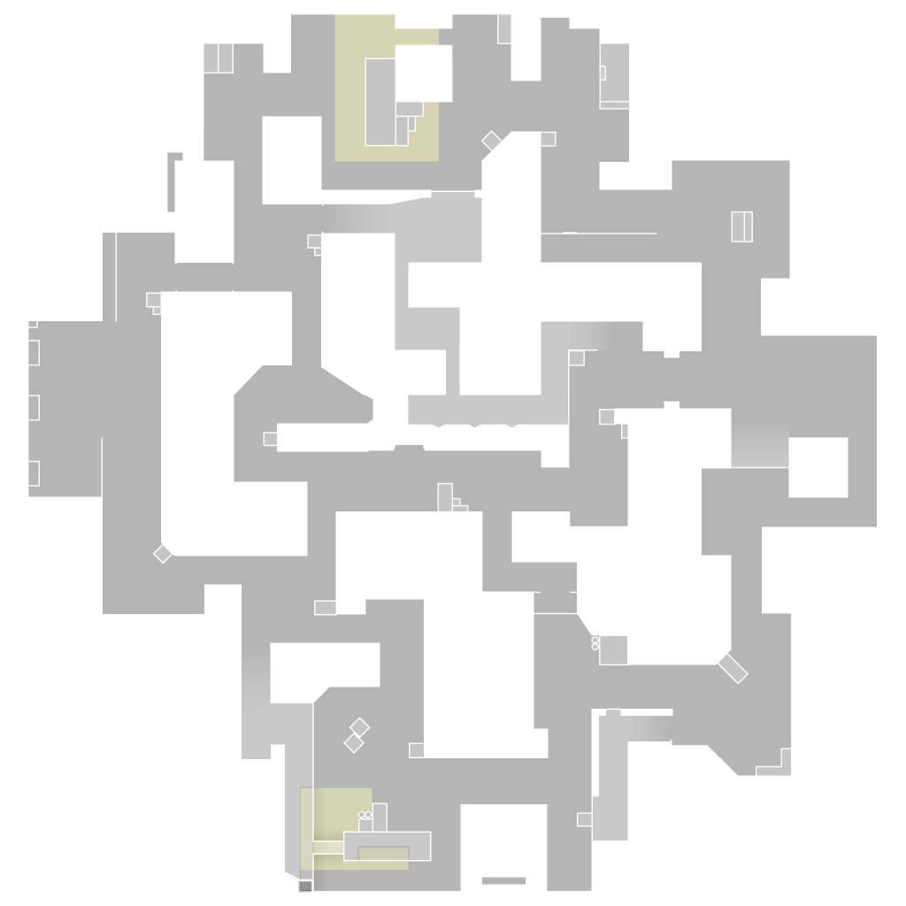
| # | stand | yaw | pitch | time | err | forgive | crosshair on |
|---|---|---|---|---|---|---|---|
| 1 | (4977, -1285, 810) | -160.8 | -16.1 | 0.36s | 100u | 100% | (4367, -1499, 799) at 673u |
| 2 | (5020, -1287, 810) | -161.5 | -15.6 | 0.37s | 106u | 88% | (4385, -1499, 799) at 695u |
| 3 | (4117, -616, 810) | -95.3 | -15.6 | 0.38s | 41u | 100% | (4056, -1281, 799) at 694u |
| 4 | (5038, -1138, 1210) | -154.7 | -34.7 | 0.40s | 147u | 88% | (4271, -1500, 799) at 1031u |
| 5 | (4959, -1147, 1210) | -154.4 | -32.6 | 0.42s | 30u | 88% | (4130, -1544, 799) at 1090u |
| 6 | (4148, -530, 810) | -97.3 | -12.4 | 0.42s | 62u | 88% | (4041, -1364, 800) at 861u |
| 7 | (4959, -992, 1210) | -147.4 | -30.7 | 0.43s | 28u | 75% | (4695, -1160, 1199) at 364u |
| 8 | (3823, -500, 810) | -79.4 | -16.0 | 0.45s | 144u | 88% | (3941, -1133, 800) at 670u |
| 9 | (5039, -984, 1210) | -149.1 | -29.0 | 0.46s | 29u | 62% | (4747, -1158, 1197) at 389u |
| 10 | (5135, -1500, 810) | -176.5 | -13.7 | 0.47s | 118u | 100% | (4373, -1547, 799) at 786u |
| 11 | (5312, -1017, 1210) | -153.8 | -27.6 | 0.50s | 147u | 75% | (4994, -1173, 1200) at 400u |
| 12 | (5374, -1279, 810) | -166.5 | -10.9 | 0.51s | 64u | 100% | (4437, -1504, 799) at 982u |
| # | stand | yaw | pitch | time | err | forgive | crosshair on |
|---|---|---|---|---|---|---|---|
| 1 | (-5856, 695, 510) | -90.1 | -9.7 | 0.67s | 85u | 88% | (-5865, -4400, -185) at 5169u |
| 2 | (-5847, 913, 460) | -90.7 | -4.4 | 0.73s | 66u | 62% | (-5914, -4400, 225) at 5330u |
| 3 | (-5851, 477, 560) | -90.0 | -14.9 | 0.76s | 120u | 62% | (-5851, -41, 597) at 536u |
| 4 | (-5890, 1373, 410) | -89.8 | -0.8 | 0.85s | 86u | 25% | (-5868, -4400, 501) at 5773u |
| 5 | (-5901, -1965, 610) | 84.3 | -14.5 | 0.89s | 126u | 62% | (-5829, -1245, 597) at 748u |
| 6 | (-5604, -1962, 610) | 98.8 | -14.4 | 0.89s | 111u | 50% | (-5707, -1293, 611) at 699u |
| 7 | (-5554, -1971, 610) | 101.8 | -14.3 | 0.89s | 109u | 25% | (-5702, -1262, 601) at 747u |
| 8 | (-5883, -2048, 610) | 85.2 | -13.8 | 0.90s | 96u | 100% | (-5819, -1286, 597) at 787u |
| 9 | (-5888, 1836, 410) | -90.3 | 0.9 | 1.08s | 86u | 25% | (-5905, -2100, 649) at 3937u |
| 10 | (-5041, -2011, 1010) | 116.9 | -20.1 | 1.67s | 119u | 50% | (-5269, -1560, 1000) at 539u |
| 11 | (-5090, -1963, 1010) | 117.1 | -25.1 | 1.68s | 135u | 38% | (-5270, -1612, 1000) at 436u |
| 12 | (-4958, -1998, 1010) | 120.6 | -19.6 | 1.68s | 142u | 38% | (-5253, -1500, 979) at 614u |
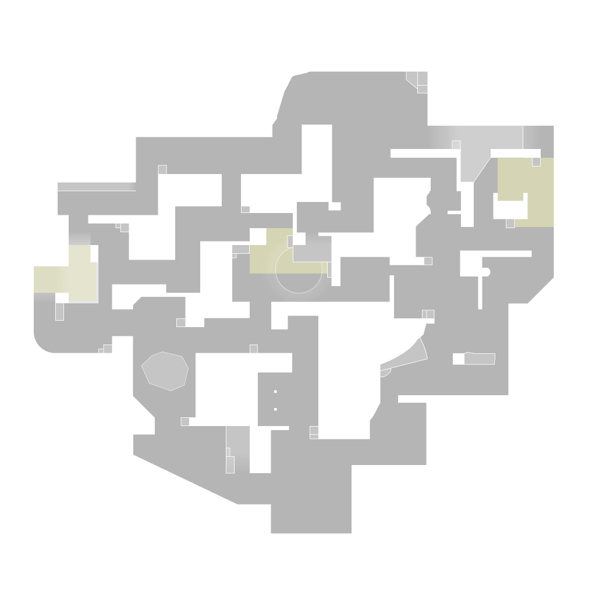
| # | stand | yaw | pitch | time | err | forgive | crosshair on |
|---|---|---|---|---|---|---|---|
| 1 | (5963, -4475, 310) | -12.7 | -12.9 | 0.35s | 82u | 88% | (6754, -4653, 300) at 832u |
| 2 | (5953, -4643, 310) | -0.4 | -12.0 | 0.37s | 50u | 62% | (6824, -4650, 300) at 891u |
| 3 | (7381, -3681, 310) | -113.2 | -12.5 | 0.37s | 86u | 62% | (7052, -4450, 300) at 857u |
| 4 | (7328, -3569, 310) | -108.8 | -14.4 | 0.38s | 147u | 100% | (7096, -4250, 300) at 743u |
| 5 | (7430, -3767, 310) | -115.5 | -14.3 | 0.39s | 9u | 100% | (7116, -4424, 300) at 752u |
| 6 | (5840, -4360, 310) | -17.9 | -14.1 | 0.40s | 147u | 88% | (6541, -4586, 300) at 759u |
| 7 | (6028, -4106, 310) | -31.1 | -12.9 | 0.40s | 5u | 100% | (6719, -4523, 300) at 827u |
| 8 | (5998, -4117, 310) | -29.9 | -12.7 | 0.40s | 5u | 100% | (6711, -4526, 300) at 843u |
| 9 | (8100, -4453, 300) | -167.1 | -10.3 | 0.44s | 35u | 38% | (7163, -4668, 300) at 977u |
| 10 | (7170, -3463, 310) | -100.3 | -11.7 | 0.44s | 46u | 100% | (7010, -4345, 300) at 915u |
| 11 | (5741, -4606, 310) | -3.7 | -11.5 | 0.45s | 4u | 100% | (6648, -4665, 300) at 928u |
| 12 | (8009, -4041, 300) | -147.6 | -11.5 | 0.47s | 15u | 100% | (7285, -4501, 300) at 875u |
| # | stand | yaw | pitch | time | err | forgive | crosshair on |
|---|---|---|---|---|---|---|---|
| 1 | (6820, -365, 210) | 55.8 | -14.0 | 0.37s | 4u | 62% | (7230, 238, 203) at 752u |
| 2 | (7481, -539, 210) | 96.6 | -12.0 | 0.38s | 48u | 50% | (7384, 298, 205) at 861u |
| 3 | (6345, 301, 128) | 9.9 | -10.2 | 0.38s | 74u | 100% | (6908, 399, 201) at 580u |
| 4 | (6720, -447, 210) | 52.0 | -13.5 | 0.41s | 72u | 100% | (7188, 151, 203) at 781u |
| 5 | (7687, -670, 210) | 106.0 | -12.1 | 0.45s | 48u | 100% | (7451, 150, 203) at 873u |
| 6 | (6428, -350, 210) | 40.7 | -11.1 | 0.46s | 4u | 100% | (7130, 254, 203) at 944u |
| 7 | (6807, -410, 210) | 58.6 | -12.5 | 0.46s | 70u | 62% | (7238, 295, 203) at 845u |
| 8 | (7573, -624, 210) | 98.9 | -12.8 | 0.46s | 16u | 100% | (7448, 167, 203) at 821u |
| 9 | (6570, -668, 210) | 54.3 | -9.8 | 0.50s | 5u | 100% | (7184, 187, 203) at 1069u |
| 10 | (6032, 28, 210) | 18.5 | -9.6 | 0.51s | 4u | 100% | (7051, 369, 203) at 1090u |
| 11 | (5990, 41, 210) | 17.5 | -9.3 | 0.52s | 4u | 100% | (7050, 375, 203) at 1126u |
| 12 | (7623, -1083, 210) | 98.2 | -9.4 | 0.54s | 100u | 100% | (7467, 3, 203) at 1113u |
| # | stand | yaw | pitch | time | err | forgive | crosshair on |
|---|---|---|---|---|---|---|---|
| 1 | (8362, 5998, 310) | -46.6 | -15.6 | 0.33s | 80u | 100% | (8817, 5517, 300) at 688u |
| 2 | (8750, 6242, 310) | -72.5 | -13.2 | 0.36s | 114u | 100% | (8988, 5489, 300) at 811u |
| 3 | (8083, 5760, 310) | -28.7 | -13.7 | 0.38s | 17u | 100% | (8750, 5395, 300) at 783u |
| 4 | (8535, 6185, 310) | -61.4 | -11.8 | 0.38s | 53u | 75% | (8957, 5410, 300) at 902u |
| 5 | (8039, 4770, 310) | 25.6 | -11.4 | 0.40s | 34u | 88% | (8865, 5165, 300) at 934u |
| 6 | (8039, 4985, 310) | 14.6 | -14.4 | 0.41s | 19u | 100% | (8737, 5167, 300) at 744u |
| 7 | (7958, 5094, 310) | 8.9 | -12.6 | 0.41s | 23u | 88% | (8774, 5222, 300) at 846u |
| 8 | (8041, 5008, 310) | 13.4 | -14.5 | 0.41s | 21u | 100% | (8737, 5174, 300) at 739u |
| 9 | (7960, 4987, 310) | 13.5 | -13.4 | 0.44s | 21u | 100% | (8715, 5168, 300) at 798u |
| 10 | (7960, 4768, 310) | 24.0 | -11.6 | 0.44s | 13u | 100% | (8786, 5136, 300) at 923u |
| 11 | (8367, 6262, 310) | -57.1 | -12.1 | 0.45s | 22u | 100% | (8838, 5535, 300) at 886u |
| 12 | (8005, 6170, 310) | -42.2 | -10.4 | 0.49s | 20u | 100% | (8753, 5492, 300) at 1026u |
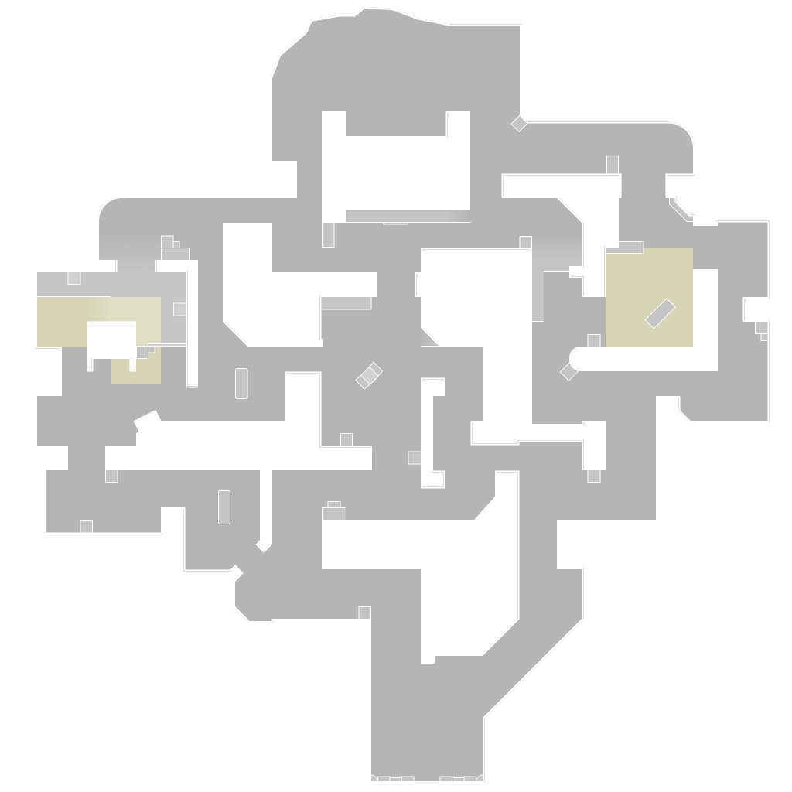
| # | stand | yaw | pitch | time | err | forgive | crosshair on |
|---|---|---|---|---|---|---|---|
| 1 | (1335, 4337, 110) | -108.7 | -14.4 | 0.36s | 32u | 100% | (1104, 3655, 100) at 743u |
| 2 | (1773, 4123, 110) | -138.6 | -14.6 | 0.38s | 63u | 100% | (1240, 3653, 100) at 735u |
| 3 | (1297, 4404, 110) | -105.5 | -13.7 | 0.38s | 34u | 100% | (1094, 3674, 100) at 780u |
| 4 | (1614, 4297, 360) | -125.2 | -27.3 | 0.39s | 77u | 100% | (1128, 3610, 100) at 947u |
| 5 | (1557, 4242, 360) | -121.4 | -29.1 | 0.40s | 53u | 100% | (1150, 3574, 100) at 894u |
| 6 | (1969, 3972, 110) | -149.1 | -12.8 | 0.42s | 34u | 100% | (1270, 3553, 100) at 836u |
| 7 | (1990, 4041, 110) | -145.7 | -13.2 | 0.42s | 65u | 100% | (1337, 3596, 100) at 812u |
| 8 | (2035, 2781, 210) | 147.7 | -17.6 | 0.43s | 64u | 62% | (1277, 3260, 100) at 941u |
| 9 | (2027, 3968, 110) | -150.7 | -12.2 | 0.44s | 34u | 100% | (1284, 3550, 100) at 872u |
| 10 | (1816, 4329, 110) | -133.1 | -12.5 | 0.44s | 80u | 100% | (1248, 3722, 100) at 852u |
| 11 | (2027, 3482, 110) | -174.8 | -13.0 | 0.44s | 35u | 88% | (1307, 3417, 118) at 742u |
| 12 | (2042, 4001, 110) | -149.6 | -11.9 | 0.45s | 34u | 100% | (1286, 3558, 100) at 896u |
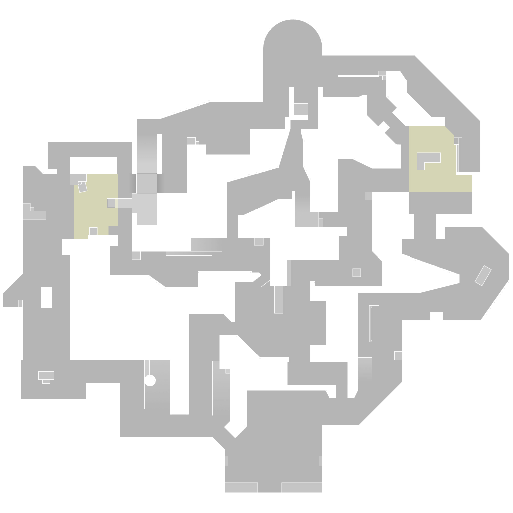
| # | stand | yaw | pitch | time | err | forgive | crosshair on |
|---|---|---|---|---|---|---|---|
| 1 | (6465, -3529, 260) | -124.0 | -15.7 | 0.33s | 142u | 50% | (6098, -4074, 250) at 683u |
| 2 | (6742, -3777, 260) | -146.8 | -15.5 | 0.40s | 132u | 88% | (6182, -4143, 250) at 694u |
| 3 | (6353, -5300, 560) | 117.2 | -27.5 | 0.41s | 92u | 100% | (5926, -4470, 250) at 1052u |
| 4 | (6663, -4990, 260) | 143.2 | -12.6 | 0.41s | 132u | 100% | (6002, -4496, 250) at 846u |
| 5 | (6438, -3307, 260) | -120.1 | -12.7 | 0.42s | 105u | 62% | (6026, -4018, 250) at 843u |
| 6 | (6385, -3253, 268) | -116.8 | -12.8 | 0.43s | 105u | 38% | (6052, -3912, 275) at 758u |
| 7 | (6190, -5516, 260) | 106.0 | -11.6 | 0.44s | 94u | 100% | (5943, -4649, 250) at 921u |
| 8 | (6820, -3501, 260) | -139.0 | -11.9 | 0.44s | 112u | 62% | (6156, -4079, 250) at 899u |
| 9 | (5963, -5535, 260) | 93.6 | -11.9 | 0.44s | 101u | 100% | (5908, -4658, 250) at 898u |
| 10 | (6919, -3864, 260) | -155.1 | -14.2 | 0.45s | 149u | 88% | (6256, -4172, 250) at 754u |
| 11 | (6770, -3562, 260) | -137.4 | -13.7 | 0.45s | 149u | 50% | (6209, -4077, 250) at 783u |
| 12 | (6783, -3978, 260) | -157.4 | -15.3 | 0.46s | 114u | 100% | (6159, -4238, 250) at 701u |
| # | stand | yaw | pitch | time | err | forgive | crosshair on |
|---|---|---|---|---|---|---|---|
| 1 | (7958, 3905, 310) | 171.5 | -15.8 | 0.36s | 113u | 75% | (7310, 4002, 300) at 681u |
| 2 | (6460, 4966, 310) | -61.9 | -15.1 | 0.38s | 55u | 12% | (6781, 4363, 300) at 708u |
| 3 | (7583, 4840, 310) | -132.1 | -14.9 | 0.38s | 56u | 100% | (7118, 4326, 300) at 717u |
| 4 | (7612, 4819, 310) | -130.1 | -14.9 | 0.38s | 56u | 100% | (7164, 4287, 300) at 719u |
| 5 | (6999, 3042, 510) | 93.0 | -25.1 | 0.39s | 40u | 38% | (6956, 3865, 300) at 909u |
| 6 | (6463, 5031, 310) | -63.6 | -14.4 | 0.40s | 60u | 25% | (6783, 4386, 300) at 744u |
| 7 | (8077, 3917, 310) | 172.8 | -14.4 | 0.40s | 133u | 75% | (7360, 4007, 300) at 746u |
| 8 | (7795, 4586, 600) | -149.4 | -29.6 | 0.40s | 30u | 88% | (7492, 4408, 575) at 404u |
| 9 | (7042, 3006, 510) | 95.2 | -24.2 | 0.41s | 41u | 25% | (6964, 3861, 300) at 941u |
| 10 | (7308, 5196, 310) | -111.0 | -13.9 | 0.41s | 146u | 100% | (7039, 4496, 300) at 773u |
| 11 | (6983, 2980, 510) | 91.9 | -23.7 | 0.41s | 42u | 50% | (6954, 3855, 300) at 957u |
| 12 | (7729, 4766, 600) | -139.6 | -28.3 | 0.41s | 33u | 75% | (7058, 4194, 300) at 1002u |
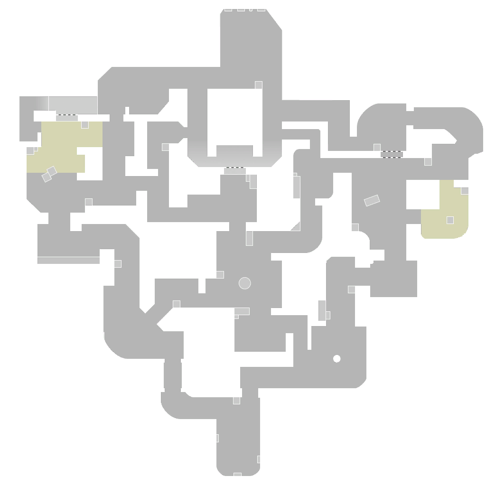
| # | stand | yaw | pitch | time | err | forgive | crosshair on |
|---|---|---|---|---|---|---|---|
| 1 | (7534, 11676, 100) | -131.3 | -14.0 | 0.35s | 35u | 100% | (7061, 11136, 95) at 740u |
| 2 | (7170, 9930, 105) | 104.6 | -14.3 | 0.35s | 18u | 100% | (6992, 10616, 100) at 731u |
| 3 | (7350, 11850, 100) | -116.4 | -13.4 | 0.37s | 21u | 100% | (7016, 11175, 95) at 775u |
| 4 | (6641, 11881, 100) | -75.2 | -10.9 | 0.38s | 56u | 12% | (6880, 10977, 95) at 951u |
| 5 | (7230, 9930, 105) | 108.8 | -13.0 | 0.38s | 16u | 100% | (6973, 10686, 95) at 820u |
| 6 | (6930, 9870, 105) | 91.7 | -12.9 | 0.39s | 13u | 100% | (6907, 10661, 98) at 812u |
| 7 | (6618, 12012, 105) | -77.8 | -10.5 | 0.39s | 64u | 38% | (6829, 11039, 95) at 1012u |
| 8 | (7050, 9750, 105) | 95.4 | -12.4 | 0.40s | 41u | 100% | (6972, 10567, 100) at 841u |
| 9 | (6579, 11913, 105) | -74.4 | -10.5 | 0.40s | 60u | 25% | (6846, 10956, 95) at 1011u |
| 10 | (7650, 10050, 105) | 132.4 | -12.7 | 0.41s | 18u | 100% | (7107, 10644, 99) at 825u |
| 11 | (6864, 11978, 100) | -90.1 | -10.1 | 0.41s | 62u | 25% | (6863, 10966, 95) at 1028u |
| 12 | (7470, 11970, 100) | -118.1 | -9.6 | 0.42s | 47u | 12% | (6968, 11028, 95) at 1082u |
| # | stand | yaw | pitch | time | err | forgive | crosshair on |
|---|---|---|---|---|---|---|---|
| 1 | (8018, 765, 105) | -16.1 | -14.1 | 0.36s | 23u | 62% | (8706, 567, 100) at 738u |
| 2 | (8670, 1470, 105) | -70.2 | -14.0 | 0.36s | 23u | 100% | (8914, 792, 100) at 743u |
| 3 | (7978, 660, 105) | -10.9 | -13.9 | 0.37s | 39u | 100% | (8693, 523, 100) at 750u |
| 4 | (9330, 1470, 105) | -106.8 | -11.0 | 0.37s | 62u | 25% | (9063, 585, 100) at 942u |
| 5 | (9823, 1073, 555) | -144.2 | -38.4 | 0.38s | 66u | 100% | (9179, 607, 100) at 1014u |
| 6 | (9426, 1546, 105) | -110.1 | -10.7 | 0.39s | 67u | 88% | (9098, 653, 100) at 968u |
| 7 | (9607, 1459, 105) | -121.3 | -10.7 | 0.39s | 57u | 62% | (9109, 641, 100) at 974u |
| 8 | (8127, 1168, 105) | -39.4 | -13.1 | 0.39s | 39u | 100% | (8726, 676, 100) at 796u |
| 9 | (9765, 1163, 560) | -137.1 | -36.3 | 0.40s | 77u | 100% | (9132, 575, 100) at 1072u |
| 10 | (9761, 1239, 560) | -133.8 | -37.0 | 0.40s | 77u | 100% | (9176, 630, 100) at 1056u |
| 11 | (8327, 1389, 105) | -50.9 | -12.9 | 0.40s | 39u | 100% | (8824, 779, 100) at 808u |
| 12 | (7970, 577, 105) | -6.3 | -14.9 | 0.40s | 39u | 100% | (8642, 503, 100) at 700u |
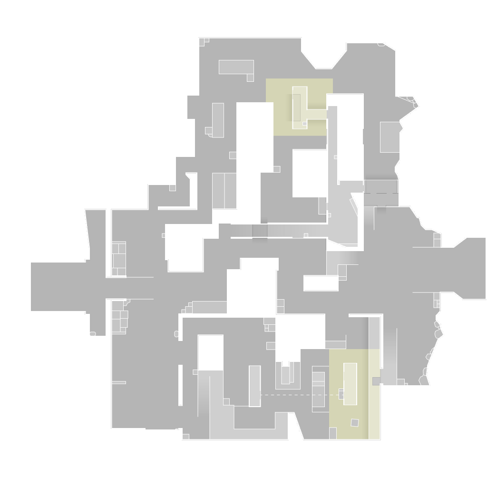
| # | stand | yaw | pitch | time | err | forgive | crosshair on |
|---|---|---|---|---|---|---|---|
| 1 | (1730, 909, 100) | 115.1 | -10.9 | 0.46s | 82u | 100% | (1408, 1599, 129) at 775u |
| 2 | (1963, 1021, 100) | 126.8 | -10.7 | 0.47s | 87u | 100% | (1499, 1642, 129) at 789u |
| 3 | (1846, 919, 100) | 119.5 | -10.5 | 0.48s | 86u | 88% | (1457, 1607, 129) at 804u |
| 4 | (2030, 1030, 100) | 129.1 | -10.4 | 0.48s | 89u | 100% | (1526, 1648, 129) at 811u |
| 5 | (1963, 1385, 100) | 136.8 | -12.4 | 0.50s | 57u | 75% | (1480, 1840, 129) at 679u |
| 6 | (1984, 1404, 100) | 138.2 | -12.4 | 0.50s | 57u | 75% | (1488, 1847, 129) at 681u |
| 7 | (2042, 906, 100) | 125.6 | -9.5 | 0.51s | 96u | 88% | (1533, 1615, 129) at 885u |
| 8 | (1683, 672, 100) | 107.8 | -9.2 | 0.53s | 112u | 100% | (1406, 1532, 129) at 916u |
| 9 | (1812, 704, 100) | 113.6 | -9.0 | 0.53s | 104u | 100% | (1444, 1546, 129) at 931u |
| 10 | (2018, 767, 510) | 121.1 | -23.5 | 0.55s | 119u | 100% | (1357, 1863, 129) at 1395u |
| 11 | (1838, 574, 100) | 111.6 | -8.1 | 0.58s | 125u | 100% | (1459, 1531, 129) at 1040u |
| 12 | (1675, 1183, 100) | 119.5 | -13.6 | 0.62s | 75u | 100% | (1378, 1708, 129) at 621u |
| # | stand | yaw | pitch | time | err | forgive | crosshair on |
|---|---|---|---|---|---|---|---|
| 1 | (-5033, 3491, 110) | 177.5 | -10.0 | 0.52s | 145u | 62% | (-5624, 3516, 181) at 600u |
| 2 | (-6265, 2436, 110) | 85.2 | -11.9 | 0.53s | 148u | 25% | (-6231, 2839, 200) at 413u |
| 3 | (-6189, 2420, 110) | 90.3 | -11.7 | 0.53s | 149u | 12% | (-6191, 2923, 181) at 513u |
| 4 | (-5028, 3969, 110) | -157.8 | -8.9 | 0.55s | 145u | 62% | (-5632, 3722, 183) at 660u |
| 5 | (-5040, 4014, 110) | -155.7 | -8.8 | 0.55s | 146u | 50% | (-5635, 3745, 184) at 661u |
| 6 | (-4925, 3623, 110) | -175.4 | -8.7 | 0.56s | 146u | 62% | (-5615, 3567, 179) at 701u |
| 7 | (-4992, 3959, 110) | -158.8 | -8.6 | 0.56s | 146u | 62% | (-5628, 3712, 182) at 690u |
| 8 | (-4871, 3527, 110) | -179.8 | -8.2 | 0.57s | 147u | 50% | (-5612, 3524, 178) at 749u |
| 9 | (-4984, 4039, 110) | -154.7 | -8.2 | 0.58s | 144u | 62% | (-5629, 3733, 183) at 722u |
| 10 | (-5040, 4336, 110) | -143.6 | -8.2 | 0.62s | 150u | 62% | (-5623, 3907, 181) at 731u |
| 11 | (-4984, 4311, 110) | -145.8 | -7.9 | 0.63s | 150u | 62% | (-5615, 3881, 179) at 771u |
| 12 | (-4731, 3408, 110) | 176.4 | -6.9 | 0.77s | 147u | 38% | (-5614, 3464, 179) at 891u |
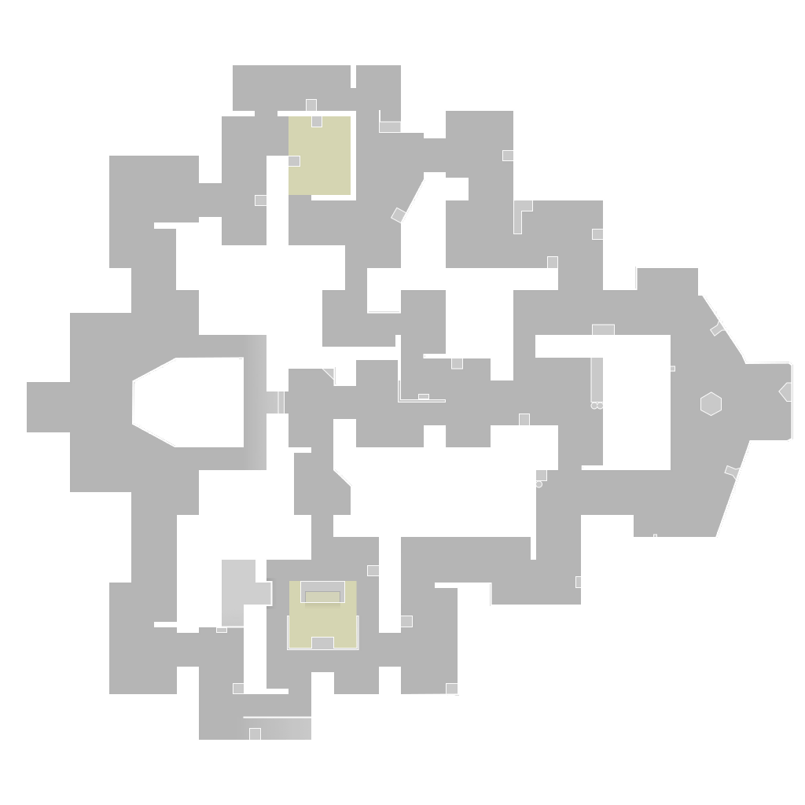
| # | stand | yaw | pitch | time | err | forgive | crosshair on |
|---|---|---|---|---|---|---|---|
| 1 | (4298, -1685, 597) | -41.7 | -13.0 | 0.37s | 21u | 100% | (4856, -2182, 600) at 767u |
| 2 | (4642, -1455, 597) | -64.1 | -13.3 | 0.38s | 23u | 100% | (4879, -1944, 644) at 558u |
| 3 | (4137, -2130, 597) | -14.7 | -12.9 | 0.38s | 48u | 62% | (4863, -2320, 600) at 771u |
| 4 | (5070, -3407, 597) | 90.3 | -13.8 | 0.39s | 35u | 100% | (5066, -2703, 599) at 724u |
| 5 | (4687, -3407, 597) | 69.7 | -12.8 | 0.40s | 33u | 100% | (4950, -2696, 600) at 777u |
| 6 | (4343, -3198, 597) | 47.5 | -12.7 | 0.42s | 7u | 100% | (4861, -2633, 600) at 785u |
| 7 | (3902, -1760, 597) | -28.1 | -10.0 | 0.48s | 23u | 100% | (4762, -2220, 600) at 991u |
| 8 | (5728, -3273, 597) | 123.7 | -14.9 | 0.48s | 148u | 38% | (5370, -2737, 600) at 667u |
| 9 | (3802, -1987, 597) | -18.7 | -11.0 | 0.50s | 93u | 100% | (4429, -2198, 644) at 674u |
| 10 | (3973, -3387, 597) | 42.2 | -8.8 | 0.53s | 23u | 100% | (4796, -2640, 600) at 1124u |
| 11 | (3803, -1530, 597) | -33.9 | -8.3 | 0.54s | 21u | 100% | (4784, -2188, 600) at 1193u |
| 12 | (3875, -3192, 597) | 32.9 | -9.1 | 0.57s | 21u | 100% | (4774, -2611, 600) at 1084u |
| # | stand | yaw | pitch | time | err | forgive | crosshair on |
|---|---|---|---|---|---|---|---|
| 1 | (-2873, -2150, 597) | 112.3 | -11.7 | 0.39s | 40u | 50% | (-3188, -1384, 600) at 846u |
| 2 | (-4303, -1465, 597) | 13.8 | -12.5 | 0.43s | 26u | 100% | (-3552, -1280, 600) at 793u |
| 3 | (-2937, -2405, 597) | 101.5 | -12.1 | 0.45s | 77u | 0% | (-3100, -1601, 595) at 840u |
| 4 | (-2147, -1738, 597) | 155.5 | -11.5 | 0.45s | 36u | 100% | (-2932, -1380, 597) at 881u |
| 5 | (-4428, -1058, 697) | -8.7 | -17.0 | 0.46s | 114u | 88% | (-3550, -1193, 600) at 929u |
| 6 | (-2263, -1867, 597) | 146.3 | -11.9 | 0.48s | 8u | 75% | (-2955, -1405, 597) at 850u |
| 7 | (-4305, -873, 697) | -18.8 | -16.2 | 0.49s | 31u | 75% | (-3421, -1175, 600) at 973u |
| 8 | (-2018, -1878, 597) | 152.7 | -9.8 | 0.49s | 45u | 88% | (-2918, -1413, 598) at 1028u |
| 9 | (-4665, -1113, 697) | -4.4 | -14.2 | 0.49s | 111u | 38% | (-3591, -1197, 600) at 1111u |
| 10 | (-4675, -1312, 697) | 4.4 | -14.1 | 0.50s | 110u | 50% | (-4389, -1290, 800) at 296u |
| 11 | (-3065, -2395, 597) | 97.6 | -13.5 | 0.51s | 132u | 50% | (-3160, -1684, 600) at 738u |
| 12 | (-4537, -1458, 697) | 11.1 | -13.4 | 0.52s | 38u | 50% | (-3416, -1238, 600) at 1174u |
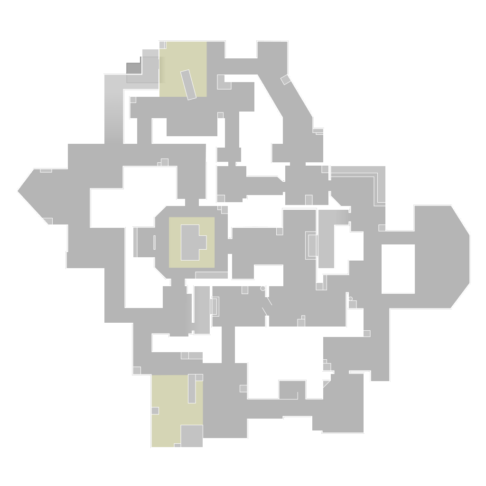
| # | stand | yaw | pitch | time | err | forgive | crosshair on |
|---|---|---|---|---|---|---|---|
| 1 | (5793, -10094, 310) | 33.6 | -16.5 | 0.31s | 134u | 12% | (6312, -9749, 300) at 650u |
| 2 | (6866, -8504, 310) | -103.6 | -15.9 | 0.34s | 138u | 0% | (6773, -8887, 373) at 410u |
| 3 | (6412, -8538, 710) | -76.4 | -31.0 | 0.36s | 146u | 12% | (6615, -9376, 367) at 1007u |
| 4 | (5819, -10151, 310) | 38.0 | -11.4 | 0.37s | 128u | 25% | (6513, -9608, 308) at 899u |
| 5 | (6335, -8503, 710) | -71.8 | -32.6 | 0.38s | 132u | 0% | (6621, -9373, 300) at 1087u |
| 6 | (6186, -8544, 710) | -63.6 | -34.2 | 0.40s | 82u | 88% | (6568, -9314, 300) at 1040u |
| 7 | (5599, -10250, 310) | 32.6 | -12.6 | 0.41s | 106u | 25% | (6298, -9803, 300) at 850u |
| 8 | (5386, -10009, 310) | 18.8 | -11.8 | 0.43s | 119u | 62% | (6224, -9724, 300) at 904u |
| 9 | (6654, -10756, 310) | 91.9 | -12.0 | 0.44s | 19u | 88% | (6635, -10196, 366) at 573u |
| 10 | (6052, -8671, 310) | -55.0 | -14.1 | 0.45s | 139u | 50% | (6474, -9274, 300) at 759u |
| 11 | (5273, -9923, 310) | 13.9 | -11.1 | 0.45s | 127u | 62% | (6193, -9695, 300) at 965u |
| 12 | (7328, -8485, 310) | -124.4 | -11.6 | 0.45s | 20u | 100% | (6818, -9230, 300) at 921u |
| # | stand | yaw | pitch | time | err | forgive | crosshair on |
|---|---|---|---|---|---|---|---|
| 1 | (-1634, -10352, 210) | 147.8 | -15.7 | 0.87s | 149u | 62% | (-2191, -10001, 200) at 684u |
| 2 | (-2489, -8417, 210) | -101.0 | -15.3 | 0.88s | 140u | 62% | (-2618, -9081, 200) at 701u |
| 3 | (-3144, -8481, 210) | -71.4 | -15.3 | 0.88s | 139u | 62% | (-2928, -9123, 200) at 703u |
| 4 | (-1647, -10425, 210) | 142.7 | -15.4 | 0.88s | 145u | 50% | (-2182, -10018, 200) at 697u |
| 5 | (-1531, -10225, 210) | 153.1 | -15.4 | 0.88s | 144u | 50% | (-2131, -9921, 200) at 698u |
| 6 | (-1367, -9572, 210) | -177.0 | -14.9 | 0.88s | 122u | 62% | (-2063, -9608, 200) at 720u |
| 7 | (-1390, -9624, 210) | -179.2 | -15.1 | 0.88s | 136u | 62% | (-2074, -9633, 200) at 709u |
| 8 | (-1168, -9688, 210) | 178.0 | -13.1 | 0.90s | 63u | 100% | (-1697, -9669, 261) at 544u |
| 9 | (-3304, -8273, 210) | -68.5 | -13.0 | 0.90s | 59u | 62% | (-3025, -8984, 209) at 784u |
| 10 | (-1186, -10021, 210) | 165.5 | -13.0 | 0.90s | 59u | 100% | (-1683, -9893, 267) at 526u |
| 11 | (-1341, -10493, 210) | 147.1 | -12.7 | 0.90s | 56u | 100% | (-2029, -10049, 200) at 840u |
| 12 | (-1159, -9959, 210) | 167.9 | -12.9 | 0.91s | 59u | 100% | (-1684, -9847, 263) at 550u |